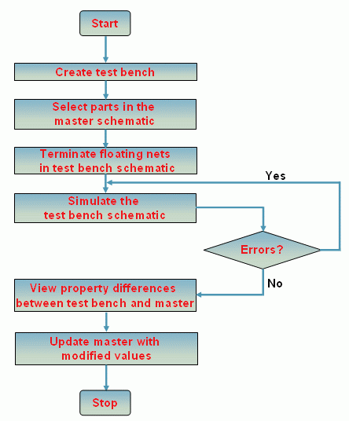

Using the
Partial Design Simulation feature, you can:
- Identify individual components of any design and simulate only selected portions
- Simulate different circuits in the design with different simulation profiles
- Create netlist of only a particular portion of the design
-
Compare
and merge portions of a design quickly
To use this feature, you select a portion called test bench of a master design. You create one or more test benches using the Tools – Test Bench – Create Test Bench menu of OrCAD Capture. The test benches are listed in the Project Manager window of the master design. You can add components from the design to a test bench by selecting them from the master schematic canvas, and then add profiles and simulate the test bench. You can also synchronize the master design with a test bench, to propagate any changes you make in the test bench design.
|
|
The OrCAD Capture CIS license is required to use this feature. |
You can use the Partial Design Simulation in the following flow, as shown in the figure:
- Create a test bench.
- Select parts in the master schematic.
- Terminate floating nets in test bench schematic.
- Simulate the test bench schematic.
- View Property differences between test bench and master.
-
Update
the master with modified values.

The remaining sections explain these steps in detail.: